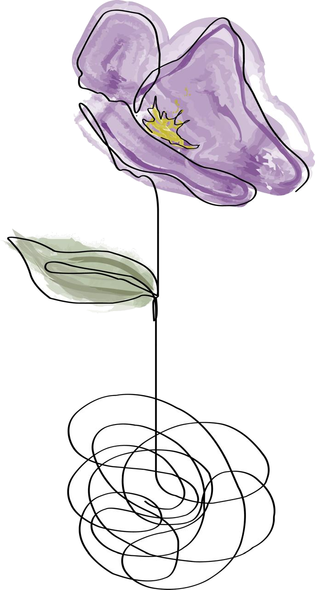

Conocerte mejor
Reconocer emociones, necesidades y patrones puede ayudarte a comprender tu historia y tus decisiones.
LICENCIADA EN PSICOLOGÍA
Un lugar de escucha y acompañamiento para comprender lo que te pasa y encontrar nuevas formas de estar mejor.
Matrícula profesional: 3210
Atención presencial y virtual

¿Por qué hacer terapia?
Pedir ayuda no significa tener todas las respuestas. Significa abrir un espacio propio para empezar a encontrarlas.
Reconocer emociones, necesidades y patrones puede ayudarte a comprender tu historia y tus decisiones.
La terapia ofrece un espacio cuidado para poner en palabras lo que preocupa y transitarlo con acompañamiento.
Un proceso terapéutico puede favorecer vínculos más saludables y formas de vivir más acordes a quien sos.
Una pausa para pensar
La interpretación de los sueños es la vía regia hacia el conocimiento de lo inconsciente.
Empezá cuando quieras
Atención presencial y virtual · Matrícula profesional 3210
3447 55-3268